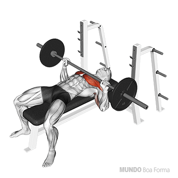

Exercícios
peito
e
costas
TODOS: 3 séries | 10 repetições
Supino reto com barra

Supino reto com halteres
Supino inclinado com barra
Supino inclinado com halteres
Crucifixo no voador (Peck deck)
Remada unilateral com halter (remada serrote)
Remada em pé com a barra T (remada cavalinho)
Puxada com barra no pulley